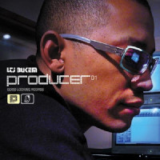

07/21/2021: LTJ Bukem
LTJ Bukem was a Drum&Bass and Jungle producer during
the 90s UK club scene that pioneered new generes of d&b like
ambient jazz d&b, breakbeat, etc. The image is cover art for one his
most popular albums 'producer 01'.
07/23/2021: Sam Grendel
Sam Grendel is a saxophonist who takes a more experimental
approch to jazz as his music often uses a varitey of different synths and
drum machines to complement his Sax skills. 'Music for Saxofone and bass Guitar' is a 2018
album where he tries some interesting things with his sax.